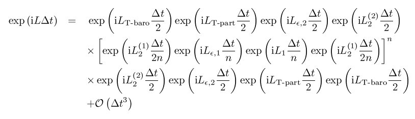

fix nvt command¶
fix nvt/cuda command¶
fix nvt/omp command¶
fix npt command¶
fix npt/cuda command¶
fix npt/omp command¶
fix nph command¶
fix nph/omp command¶
Syntax¶
fix ID group-ID style_name keyword value ...
ID, group-ID are documented in fix command
style_name = nvt or npt or nph
one or more keyword/value pairs may be appended
keyword = temp or iso or aniso or tri or x or y or z or xy or yz or xz or couple or tchain or pchain or mtk or tloop or ploop or nreset or drag or dilate or scalexy or scaleyz or scalexz or flip or fixedpoint temp values = Tstart Tstop Tdamp Tstart,Tstop = external temperature at start/end of run Tdamp = temperature damping parameter (time units) iso or aniso or tri values = Pstart Pstop Pdamp Pstart,Pstop = scalar external pressure at start/end of run (pressure units) Pdamp = pressure damping parameter (time units) x or y or z or xy or yz or xz values = Pstart Pstop Pdamp Pstart,Pstop = external stress tensor component at start/end of run (pressure units) Pdamp = stress damping parameter (time units) couple = none or xyz or xy or yz or xz tchain value = N N = length of thermostat chain (1 = single thermostat) pchain values = N N length of thermostat chain on barostat (0 = no thermostat) mtk value = yes or no = add in MTK adjustment term or not tloop value = M M = number of sub-cycles to perform on thermostat ploop value = M M = number of sub-cycles to perform on barostat thermostat nreset value = reset reference cell every this many timesteps drag value = Df Df = drag factor added to barostat/thermostat (0.0 = no drag) dilate value = dilate-group-ID dilate-group-ID = only dilate atoms in this group due to barostat volume changes scalexy value = yes or no = scale xy with ly scaleyz value = yes or no = scale yz with lz scalexz value = yes or no = scale xz with lz flip value = yes or no = allow or disallow box flips when it becomes highly skewed fixedpoint values = x y z x,y,z = perform barostat dilation/contraction around this point (distance units)
Examples¶
fix 1 all nvt temp 300.0 300.0 100.0
fix 1 water npt temp 300.0 300.0 100.0 iso 0.0 0.0 1000.0
fix 2 jello npt temp 300.0 300.0 100.0 tri 5.0 5.0 1000.0
fix 2 ice nph x 1.0 1.0 0.5 y 2.0 2.0 0.5 z 3.0 3.0 0.5 yz 0.1 0.1 0.5 xz 0.2 0.2 0.5 xy 0.3 0.3 0.5 nreset 1000
Description¶
These commands perform time integration on Nose-Hoover style non-Hamiltonian equations of motion which are designed to generate positions and velocities sampled from the canonical (nvt), isothermal-isobaric (npt), and isenthalpic (nph) ensembles. This updates the position and velocity for atoms in the group each timestep.
The thermostatting and barostatting is achieved by adding some dynamic variables which are coupled to the particle velocities (thermostatting) and simulation domain dimensions (barostatting). In addition to basic thermostatting and barostatting, these fixes can also create a chain of thermostats coupled to the particle thermostat, and another chain of thermostats coupled to the barostat variables. The barostat can be coupled to the overall box volume, or to individual dimensions, including the xy, xz and yz tilt dimensions. The external pressure of the barostat can be specified as either a scalar pressure (isobaric ensemble) or as components of a symmetric stress tensor (constant stress ensemble). When used correctly, the time-averaged temperature and stress tensor of the particles will match the target values specified by Tstart/Tstop and Pstart/Pstop.
The equations of motion used are those of Shinoda et al in (Shinoda), which combine the hydrostatic equations of Martyna, Tobias and Klein in (Martyna) with the strain energy proposed by Parrinello and Rahman in (Parrinello). The time integration schemes closely follow the time-reversible measure-preserving Verlet and rRESPA integrators derived by Tuckerman et al. in (Tuckerman).
The thermostat parameters for fix styles nvt and npt is specified using the temp keyword. Other thermostat-related keywords are tchain, tloop and drag, which are discussed below.
The thermostat is applied to only the translational degrees of freedom for the particles. The translational degrees of freedom can also have a bias velocity removed before thermostatting takes place; see the description below. The desired temperature at each timestep is a ramped value during the run from Tstart to Tstop. The Tdamp parameter is specified in time units and determines how rapidly the temperature is relaxed. For example, a value of 10.0 means to relax the temperature in a timespan of (roughly) 10 time units (e.g. tau or fmsec or psec - see the units command). The atoms in the fix group are the only ones whose velocities and positions are updated by the velocity/position update portion of the integration.
Warning
A Nose-Hoover thermostat will not work well for arbitrary values of Tdamp. If Tdamp is too small, the temperature can fluctuate wildly; if it is too large, the temperature will take a very long time to equilibrate. A good choice for many models is a Tdamp of around 100 timesteps. Note that this is NOT the same as 100 time units for most units settings.
The barostat parameters for fix styles npt and nph is specified using one or more of the iso, aniso, tri, x, y, z, xy, xz, yz, and couple keywords. These keywords give you the ability to specify all 6 components of an external stress tensor, and to couple various of these components together so that the dimensions they represent are varied together during a constant-pressure simulation.
Other barostat-related keywords are pchain, mtk, ploop, nreset, drag, and dilate, which are discussed below.
Orthogonal simulation boxes have 3 adjustable dimensions (x,y,z). Triclinic (non-orthogonal) simulation boxes have 6 adjustable dimensions (x,y,z,xy,xz,yz). The create_box, read data, and read_restart commands specify whether the simulation box is orthogonal or non-orthogonal (triclinic) and explain the meaning of the xy,xz,yz tilt factors.
The target pressures for each of the 6 components of the stress tensor can be specified independently via the x, y, z, xy, xz, yz keywords, which correspond to the 6 simulation box dimensions. For each component, the external pressure or tensor component at each timestep is a ramped value during the run from Pstart to Pstop. If a target pressure is specified for a component, then the corresponding box dimension will change during a simulation. For example, if the y keyword is used, the y-box length will change. If the xy keyword is used, the xy tilt factor will change. A box dimension will not change if that component is not specified, although you have the option to change that dimension via the fix deform command.
Note that in order to use the xy, xz, or yz keywords, the simulation box must be triclinic, even if its initial tilt factors are 0.0.
For all barostat keywords, the Pdamp parameter operates like the Tdamp parameter, determining the time scale on which pressure is relaxed. For example, a value of 10.0 means to relax the pressure in a timespan of (roughly) 10 time units (e.g. tau or fmsec or psec - see the units command).
Warning
A Nose-Hoover barostat will not work well for arbitrary values of Pdamp. If Pdamp is too small, the pressure and volume can fluctuate wildly; if it is too large, the pressure will take a very long time to equilibrate. A good choice for many models is a Pdamp of around 1000 timesteps. Note that this is NOT the same as 1000 time units for most units settings.
Regardless of what atoms are in the fix group (the only atoms which are time integrated), a global pressure or stress tensor is computed for all atoms. Similarly, when the size of the simulation box is changed, all atoms are re-scaled to new positions, unless the keyword dilate is specified with a dilate-group-ID for a group that represents a subset of the atoms. This can be useful, for example, to leave the coordinates of atoms in a solid substrate unchanged and controlling the pressure of a surrounding fluid. This option should be used with care, since it can be unphysical to dilate some atoms and not others, because it can introduce large, instantaneous displacements between a pair of atoms (one dilated, one not) that are far from the dilation origin. Also note that for atoms not in the fix group, a separate time integration fix like fix nve or fix nvt can be used on them, independent of whether they are dilated or not.
The couple keyword allows two or three of the diagonal components of the pressure tensor to be “coupled” together. The value specified with the keyword determines which are coupled. For example, xz means the Pxx and Pzz components of the stress tensor are coupled. Xyz means all 3 diagonal components are coupled. Coupling means two things: the instantaneous stress will be computed as an average of the corresponding diagonal components, and the coupled box dimensions will be changed together in lockstep, meaning coupled dimensions will be dilated or contracted by the same percentage every timestep. The Pstart, Pstop, Pdamp parameters for any coupled dimensions must be identical. Couple xyz can be used for a 2d simulation; the z dimension is simply ignored.
The iso, aniso, and tri keywords are simply shortcuts that are equivalent to specifying several other keywords together.
The keyword iso means couple all 3 diagonal components together when pressure is computed (hydrostatic pressure), and dilate/contract the dimensions together. Using “iso Pstart Pstop Pdamp” is the same as specifying these 4 keywords:
x Pstart Pstop Pdamp
y Pstart Pstop Pdamp
z Pstart Pstop Pdamp
couple xyz
The keyword aniso means x, y, and z dimensions are controlled independently using the Pxx, Pyy, and Pzz components of the stress tensor as the driving forces, and the specified scalar external pressure. Using “aniso Pstart Pstop Pdamp” is the same as specifying these 4 keywords:
x Pstart Pstop Pdamp
y Pstart Pstop Pdamp
z Pstart Pstop Pdamp
couple none
The keyword tri means x, y, z, xy, xz, and yz dimensions are controlled independently using their individual stress components as the driving forces, and the specified scalar pressure as the external normal stress. Using “tri Pstart Pstop Pdamp” is the same as specifying these 7 keywords:
x Pstart Pstop Pdamp
y Pstart Pstop Pdamp
z Pstart Pstop Pdamp
xy 0.0 0.0 Pdamp
yz 0.0 0.0 Pdamp
xz 0.0 0.0 Pdamp
couple none
In some cases (e.g. for solids) the pressure (volume) and/or temperature of the system can oscillate undesirably when a Nose/Hoover barostat and thermostat is applied. The optional drag keyword will damp these oscillations, although it alters the Nose/Hoover equations. A value of 0.0 (no drag) leaves the Nose/Hoover formalism unchanged. A non-zero value adds a drag term; the larger the value specified, the greater the damping effect. Performing a short run and monitoring the pressure and temperature is the best way to determine if the drag term is working. Typically a value between 0.2 to 2.0 is sufficient to damp oscillations after a few periods. Note that use of the drag keyword will interfere with energy conservation and will also change the distribution of positions and velocities so that they do not correspond to the nominal NVT, NPT, or NPH ensembles.
An alternative way to control initial oscillations is to use chain thermostats. The keyword tchain determines the number of thermostats in the particle thermostat. A value of 1 corresponds to the original Nose-Hoover thermostat. The keyword pchain specifies the number of thermostats in the chain thermostatting the barostat degrees of freedom. A value of 0 corresponds to no thermostatting of the barostat variables.
The mtk keyword controls whether or not the correction terms due to Martyna, Tuckerman, and Klein are included in the equations of motion (Martyna). Specifying no reproduces the original Hoover barostat, whose volume probability distribution function differs from the true NPT and NPH ensembles by a factor of 1/V. Hence using yes is more correct, but in many cases the difference is negligible.
The keyword tloop can be used to improve the accuracy of integration scheme at little extra cost. The initial and final updates of the thermostat variables are broken up into tloop substeps, each of length dt/tloop. This corresponds to using a first-order Suzuki-Yoshida scheme (Tuckerman). The keyword ploop does the same thing for the barostat thermostat.
The keyword nreset controls how often the reference dimensions used to define the strain energy are reset. If this keyword is not used, or is given a value of zero, then the reference dimensions are set to those of the initial simulation domain and are never changed. If the simulation domain changes significantly during the simulation, then the final average pressure tensor will differ significantly from the specified values of the external stress tensor. A value of nstep means that every nstep timesteps, the reference dimensions are set to those of the current simulation domain.
The scaleyz, scalexz, and scalexy keywords control whether or not the corresponding tilt factors are scaled with the associated box dimensions when barostatting triclinic periodic cells. The default values yes will turn on scaling, which corresponds to adjusting the linear dimensions of the cell while preserving its shape. Choosing no ensures that the tilt factors are not scaled with the box dimensions. See below for restrictions and default values in different situations. In older versions of LAMMPS, scaling of tilt factors was not performed. The old behavior can be recovered by setting all three scale keywords to no.
The flip keyword allows the tilt factors for a triclinic box to exceed half the distance of the parallel box length, as discussed below. If the flip value is set to yes, the bound is enforced by flipping the box when it is exceeded. If the flip value is set to no, the tilt will continue to change without flipping. Note that if applied stress induces large deformations (e.g. in a liquid), this means the box shape can tilt dramatically and LAMMPS will run less efficiently, due to the large volume of communication needed to acquire ghost atoms around a processor’s irregular-shaped sub-domain. For extreme values of tilt, LAMMPS may also lose atoms and generate an error.
The fixedpoint keyword specifies the fixed point for barostat volume changes. By default, it is the center of the box. Whatever point is chosen will not move during the simulation. For example, if the lower periodic boundaries pass through (0,0,0), and this point is provided to fixedpoint, then the lower periodic boundaries will remain at (0,0,0), while the upper periodic boundaries will move twice as far. In all cases, the particle trajectories are unaffected by the chosen value, except for a time-dependent constant translation of positions.
Warning
Using a barostat coupled to tilt dimensions xy, xz, yz can sometimes result in arbitrarily large values of the tilt dimensions, i.e. a dramatically deformed simulation box. LAMMPS allows the tilt factors to grow a small amount beyond the normal limit of half the box length (0.6 times the box length), and then performs a box “flip” to an equivalent periodic cell. See the discussion of the flip keyword above, to allow this bound to be exceeded, if desired.
The flip operation is described in more detail in the doc page for fix deform. Both the barostat dynamics and the atom trajectories are unaffected by this operation. However, if a tilt factor is incremented by a large amount (1.5 times the box length) on a single timestep, LAMMPS can not accomodate this event and will terminate the simulation with an error. This error typically indicates that there is something badly wrong with how the simulation was constructed, such as specifying values of Pstart that are too far from the current stress value, or specifying a timestep that is too large. Triclinic barostatting should be used with care. This also is true for other barostat styles, although they tend to be more forgiving of insults. In particular, it is important to recognize that equilibrium liquids can not support a shear stress and that equilibrium solids can not support shear stresses that exceed the yield stress.
One exception to this rule is if the 1st dimension in the tilt factor (x for xy) is non-periodic. In that case, the limits on the tilt factor are not enforced, since flipping the box in that dimension does not change the atom positions due to non-periodicity. In this mode, if you tilt the system to extreme angles, the simulation will simply become inefficient due to the highly skewed simulation box.
Warning
Unlike the fix temp/berendsen command which performs thermostatting but NO time integration, these fixes perform thermostatting/barostatting AND time integration. Thus you should not use any other time integration fix, such as fix nve on atoms to which this fix is applied. Likewise, the temp options for fix nvt and fix npt should not normally be used on atoms that also have their temperature controlled by another fix - e.g. by fix langevin or fix temp/rescale commands.
See this howto section of the manual for a discussion of different ways to compute temperature and perform thermostatting and barostatting.
These fixes compute a temperature and pressure each timestep. To do this, the fix creates its own computes of style “temp” and “pressure”, as if one of these two sets of commands had been issued:
compute fix-ID_temp group-ID temp
compute fix-ID_press group-ID pressure fix-ID_temp
compute fix-ID_temp all temp
compute fix-ID_press all pressure fix-ID_temp
See the compute temp and compute pressure commands for details. Note that the IDs of the new computes are the fix-ID + underscore + “temp” or fix_ID + underscore + “press”. For fix nvt, the group for the new computes is the same as the fix group. For fix nph and fix npt, the group for the new computes is “all” since pressure is computed for the entire system.
Note that these are NOT the computes used by thermodynamic output (see the thermo_style command) with ID = thermo_temp and thermo_press. This means you can change the attributes of this fix’s temperature or pressure via the compute_modify command or print this temperature or pressure during thermodynamic output via the thermo_style custom command using the appropriate compute-ID. It also means that changing attributes of thermo_temp or thermo_press will have no effect on this fix.
Like other fixes that perform thermostatting, fix nvt and fix npt can be used with compute commands that calculate a temperature after removing a “bias” from the atom velocities. E.g. removing the center-of-mass velocity from a group of atoms or only calculating temperature on the x-component of velocity or only calculating temperature for atoms in a geometric region. This is not done by default, but only if the fix_modify command is used to assign a temperature compute to this fix that includes such a bias term. See the doc pages for individual compute commands to determine which ones include a bias. In this case, the thermostat works in the following manner: the current temperature is calculated taking the bias into account, bias is removed from each atom, thermostatting is performed on the remaining thermal degrees of freedom, and the bias is added back in.
These fixes can be used with either the verlet or respa integrators. When using one of the barostat fixes with respa, LAMMPS uses an integrator constructed according to the following factorization of the Liouville propagator (for two rRESPA levels):
This factorization differs somewhat from that of Tuckerman et al., in that the barostat is only updated at the outermost rRESPA level, whereas Tuckerman’s factorization requires splitting the pressure into pieces corresponding to the forces computed at each rRESPA level. In theory, the latter method will exhibit better numerical stability. In practice, because Pdamp is normally chosen to be a large multiple of the outermost rRESPA timestep, the barostat dynamics are not the limiting factor for numerical stability. Both factorizations are time-reversible and can be shown to preserve the phase space measure of the underlying non-Hamiltonian equations of motion.
The fix npt and fix nph commands can be used with rigid bodies or mixtures of rigid bodies and non-rigid particles (e.g. solvent). But there are also fix rigid/npt and fix rigid/nph commands, which are typically a more natural choice. See the doc page for those commands for more discussion of the various ways to do this.
Styles with a cuda, gpu, omp, or opt suffix are functionally the same as the corresponding style without the suffix. They have been optimized to run faster, depending on your available hardware, as discussed in Section_accelerate of the manual. The accelerated styles take the same arguments and should produce the same results, except for round-off and precision issues.
These accelerated styles are part of the USER-CUDA, GPU, USER-OMP and OPT packages, respectively. They are only enabled if LAMMPS was built with those packages. See the Making LAMMPS section for more info.
You can specify the accelerated styles explicitly in your input script by including their suffix, or you can use the -suffix command-line switch when you invoke LAMMPS, or you can use the suffix command in your input script.
See Section_accelerate of the manual for more instructions on how to use the accelerated styles effectively.
Restart, fix_modify, output, run start/stop, minimize info:
These fixes writes the state of all the thermostat and barostat variables to binary restart files. See the read_restart command for info on how to re-specify a fix in an input script that reads a restart file, so that the operation of the fix continues in an uninterrupted fashion.
The fix_modify temp and press options are supported by these fixes. You can use them to assign a compute you have defined to this fix which will be used in its thermostatting or barostatting procedure, as described above. If you do this, note that the kinetic energy derived from the compute temperature should be consistent with the virial term computed using all atoms for the pressure. LAMMPS will warn you if you choose to compute temperature on a subset of atoms.
Warning
If both the temp and press keywords are used in a single thermo_modify command (or in two separate commands), then the order in which the keywords are specified is important. Note that a pressure compute defines its own temperature compute as an argument when it is specified. The temp keyword will override this (for the pressure compute being used by fix npt), but only if the temp keyword comes after the press keyword. If the temp keyword comes before the press keyword, then the new pressure compute specified by the press keyword will be unaffected by the temp setting.
The fix_modify energy option is supported by these fixes to add the energy change induced by Nose/Hoover thermostatting and barostatting to the system’s potential energy as part of thermodynamic output.
These fixes compute a global scalar and a global vector of quantities, which can be accessed by various output commands. The scalar value calculated by these fixes is “extensive”; the vector values are “intensive”.
The scalar is the cumulative energy change due to the fix.
The vector stores internal Nose/Hoover thermostat and barostat variables. The number and meaning of the vector values depends on which fix is used and the settings for keywords tchain and pchain, which specify the number of Nose/Hoover chains for the thermostat and barostat. If no thermostatting is done, then tchain is 0. If no barostatting is done, then pchain is 0. In the following list, “ndof” is 0, 1, 3, or 6, and is the number of degrees of freedom in the barostat. Its value is 0 if no barostat is used, else its value is 6 if any off-diagonal stress tensor component is barostatted, else its value is 1 if couple xyz is used or couple xy for a 2d simulation, otherwise its value is 3.
The order of values in the global vector and their meaning is as follows. The notation means there are tchain values for eta, followed by tchain for eta_dot, followed by ndof for omega, etc:
eta[tchain] = particle thermostat displacements (unitless)
eta_dot[tchain] = particle thermostat velocities (1/time units)
omega[ndof] = barostat displacements (unitless)
omega_dot[ndof] = barostat velocities (1/time units)
etap[pchain] = barostat thermostat displacements (unitless)
etap_dot[pchain] = barostat thermostat velocities (1/time units)
PE_eta[tchain] = potential energy of each particle thermostat displacement (energy units)
KE_eta_dot[tchain] = kinetic energy of each particle thermostat velocity (energy units)
PE_omega[ndof] = potential energy of each barostat displacement (energy units)
KE_omega_dot[ndof] = kinetic energy of each barostat velocity (energy units)
PE_etap[pchain] = potential energy of each barostat thermostat displacement (energy units)
KE_etap_dot[pchain] = kinetic energy of each barostat thermostat velocity (energy units)
PE_strain[1] = scalar strain energy (energy units)
These fixes can ramp their external temperature and pressure over multiple runs, using the start and stop keywords of the run command. See the run command for details of how to do this.
These fixes are not invoked during energy minimization.
Restrictions¶
X, y, z cannot be barostatted if the associated dimension is not periodic. Xy, xz, and yz can only be barostatted if the simulation domain is triclinic and the 2nd dimension in the keyword (y dimension in xy) is periodic. Z, xz, and yz, cannot be barostatted for 2D simulations. The create_box, read data, and read_restart commands specify whether the simulation box is orthogonal or non-orthogonal (triclinic) and explain the meaning of the xy,xz,yz tilt factors.
For the temp keyword, the final Tstop cannot be 0.0 since it would make the external T = 0.0 at some timestep during the simulation which is not allowed in the Nose/Hoover formulation.
The scaleyz yes and scalexz yes keyword/value pairs can not be used for 2D simulations. scaleyz yes, scalexz yes, and scalexy yes options can only be used if the 2nd dimension in the keyword is periodic, and if the tilt factor is not coupled to the barostat via keywords tri, yz, xz, and xy.
Default¶
The keyword defaults are tchain = 3, pchain = 3, mtk = yes, tloop = ploop = 1, nreset = 0, drag = 0.0, dilate = all, couple = none, scaleyz = scalexz = scalexy = yes if periodic in 2nd dimension and not coupled to barostat, otherwise no.
(Martyna) Martyna, Tobias and Klein, J Chem Phys, 101, 4177 (1994).
(Parrinello) Parrinello and Rahman, J Appl Phys, 52, 7182 (1981).
(Tuckerman) Tuckerman, Alejandre, Lopez-Rendon, Jochim, and Martyna, J Phys A: Math Gen, 39, 5629 (2006).
(Shinoda) Shinoda, Shiga, and Mikami, Phys Rev B, 69, 134103 (2004).